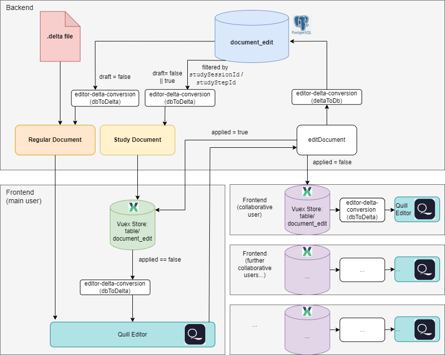

Quill Editor
The Editor component is a delta-based Quill Editor used for editing documents. When the Editor is initialized, it is capable of handling text changes and processing deltas to update the database.
- Key features include:
Handling text changes and debouncing these changes
Managing the content, formatting, and styling of the document
Configuring and customizing the toolbar
Exporting the document as HTML and full access to delta files
Overview
This documentation is intended to help understand the codebase for the editor built using Quill. It outlines the connections and configurations necessary for extending the editor and provides instructions for logging user interactions, running unit tests, managing modules, and handling database migrations.
Implementing the Editor
To implement and use the editor, orient yourself on the existing implementation in the codebase. The following sections describe the key aspects and present basic code examples.
Initialization and Configuration
The editor should be properly initialized and configured. This involves setting up the editor container, initializing the editor instance, and configuring toolbar options and themes.
import Editor from '@/components/editor/Editor.vue';
import { EditorStore } from './editorStore.js';
export default {
data() {
return {
editor: null,
};
},
mounted() {
const editorContainer = document.getElementById('<editor-container-id>');
if (editorContainer) {
this.editor = new Editor(editorContainer, {
modules: {
toolbar: true
},
theme: "snow"
});
}
}
};
Refer to frontend/src/components/editor/Editor.vue for the full implementation.
Debouncing of text changes
Debouncing is used to limit the number of database updates during text changes, improving performance and reducing the number of requests sent to the backend.
The editor captures text changes using Quill’s text-change event.
Tip
Set the debounce time based on the expected frequency of text changes and the desired performance with the setting editor.edits.debounceTime.
(see: Dashboard → Settings → Editor → Edits).
Toolbar Configuration
The toolbar can be customized based on the study or document context. Its visibility and available tools are managed through centralized settings in the admin dashboard:
editor.toolbar.visibility– Toggles the entire toolbareditor.toolbar.showHTMLDownload– Toggles download button of HTML documentseditor.toolbar.tools.bold,editor.toolbar.tools.header, etc. – Enable/disable individual formatting options
For a full list of available settings, refer to the Editor Settings.
If you’re developing the platform or need to introduce a new setting key, see Adding a New Setting for instructions.
Delta Files and DB Edits
CARE’s document system supports two distinct editing modes, each optimized for a specific type of workflow:
Regular documents are used for everyday writing and collaborative editing.
Study documents are used in controlled research workflows, such as user studies, where each editing session is tracked per user and study step.
These two document types follow fundamentally different strategies for how content is loaded, edited, and saved. Both modes use Quill as the editor and Vuex for local state, but the backend logic and sync model differ.
CARE combines two types of persistent data storage:
Delta files (
.delta): contain the most recently saved full document, enabling faster loading and efficient caching. Used only by regular documents.Database edits (
document_edittable): contain atomic operations like inserts or deletions — along with metadata such asuserId,draft, and optionallystudySessionIdandstudyStepId.
The diagram below shows the complete flow of how these layers interact, with backend logic at the top, frontend (main user) in the left, and collaborative users at the right:
{kind=link}

Regular Documents
Regular documents use a hybrid model that combines two sources when loading a document (as shown in the top-left branches of the diagram):
A
.deltafile, which stores the last fully saved state. These entries are considered permanent and marked withdraft = false.A set of in-progress edits stored in the
document_edittable. These represent unsaved changes and are marked withdraft = true.
When a regular document is opened, the backend performs two steps:
It checks if a
.deltafile already exists for the document; if not (e.g., for a new document), an empty one is created in the configured files directory before proceeding.It queries the
document_edittable for all draft entries belonging to the document.
The draft entries are then passed through the dbToDelta() function (from editor-delta-conversion) to convert them into Quill-compatible operations. Both sources, the saved delta and the current drafts, are merged server-side into a single Delta. This merged result is then sent to the frontend, where the Quill editor renders the complete up-to-date view.
During editing, every change made in the Quill editor is first captured as a Delta.
Before sending anything to the backend, the system converts this Delta using deltaToDb() into a set of database-friendly atomic operations.
These operations are then transmitted via WebSocket (editDocument event) to the backend.
After storing them in the document_edit table with draft = true, the backend broadcasts the change back to all connected clients, where the frontend Vuex store (table/document_edit) updates its local state accordingly.
Collaboration and Self-Edit Filtering
In collaborative editing, the frontend listens for edits coming from the backend via WebSocket. To avoid applying your own changes twice, the backend includes the socket ID of the sender along with each edit.
When an edit is created by the current user, it is immediately stored in Vuex with applied = true for that sender.
This ensures that if the same edit is broadcast back from the backend (e.g., to another browser tab), it will be applied there, but skipped in the current tab.
When an edit is received from the backend:
The editor checks if the incoming sender ID matches the current client’s
this.$socket.id.If it matches, the edit is ignored locally because it is already present in the current editor state.
If it does not match, the edit is converted with
dbToDelta()and applied to the Quill instance using theprocessEditsfunction.After applying, the edit is marked
applied = truein Vuex so it won’t be reprocessed later.
- This logic is implemented in:
Editor.vue– subscribing to document changes inmountedand unsubscribing inunmounted.document.js– emitting edits along with the sender’s socket ID.
Tip
In the regular document flow, the editor always receives a single merged Delta. This corresponds to the part of the diagram where the red .delta file is merged with the blue document_edit database entries (after they pass through editor-delta-conversion) to form the final document state in the Regular Document editor.
To persist in-progress edits, the system uses autosave (see Debounce Behaviour). Autosave runs at defined intervals and on specific events, such as when the editor component is unmounted or when the WebSocket connection closes while a document is still open. This ensures that the backend always has the latest state, even if the user navigates away or loses connection unexpectedly.
Additionally, when the WebSocket disconnects, the backend triggers a final save of all open documents by calling saveDocument. This is why the list of open components (like editors) is tracked during mount.
Merges all
draft: trueedits with the current.deltafile.Writes a new
.deltato disk, reflecting the latest saved state.Updates the corresponding entries in the database, marking them as
draft: false.
This separation ensures durability while allowing users to work with unsaved content. The Quill editor always reflects the full working state, while the backend distinguishes between persisted and temporary data.
Draft State: draft = true vs draft = false
Entries marked
draft: trueare temporary and unsaved.Entries marked
draft: falsehave already been saved to the disk via the.deltafile.On load, regular documents pull only
draft: trueedits from the database and combine them with the saved.deltastate.
Study Documents
Unlike regular documents, study documents do not use .delta files at all. They are built for session-based, isolated editing, where all content is stored in the database and scoped by user session and step. This is shown in the middle top branch of the diagram.
All edits are stored in the document_edit table and grouped by:
studySessionId, identifying the unique editing session for a user.studyStepId, representing a step in the study workflow (e.g., step 1, step 2).
When a study document is opened, the backend queries the document_edit table for:
Base edits, where
studySessionIdandstudyStepIdarenull— these are shared across all sessions and represent the initial copied content.Session-specific edits, where the IDs are set — these are isolated changes applied on top of the base for the active session and step.
All matching edits are merged in the backend using dbToDelta() (from utils/modules/editor-delta-conversion/index.js), combining the ordered atomic operations into a single Quill-compatible Delta.
This Delta is then sent to the frontend, where the Quill editor renders the isolated document state for the user.
During editing, the workflow is as follows:
The Quill editor emits a change Delta whenever the user makes an edit.
This Delta is converted into a set of database-friendly atomic operations using
deltaToDb().The converted operations are sent to the backend via the
editDocumentWebSocket event.The backend stores each operation in the
document_edittable with the associatedstudySessionId,studyStepId, anddraft: true.The backend broadcasts the new edit to other connected clients working on the same session and step.
Synchronize: Receiving and Applying Edits
On the frontend, each local edit is added to the Vuex store (table/document_edit) with applied = false by default.
However, when an edit is sent by the current user, the Vuex store immediately sets its applied flag to true for that sender, so that if the same edit comes back through WebSocket (e.g., in another browser tab), it will still be applied there.
The frontend listens for incoming edits from the backend (e.g., via WebSocket) and processes them as follows:
Receive Edit: The Vuex store gets a new edit from the backend (via WebSocket).
Check for Sender: If the edit originated from the current client, it already has
applied = truelocally to prevent re-applying in the same tab.Check Application State: For all other cases, the store checks whether
applied = true(based on the edit ID).Apply Edit: If
applied = false, the edit is passed throughdbToDelta()and inserted into the Quill editor.Mark as Applied: After applying, the edit’s flag in Vuex is set to
applied = trueso it’s skipped in future.Skip Duplicates: If
applied = truealready, the edit is ignored , this is avoiding duplicate insertions due to socket replays or network latency.
Tip
This edit coordination is visualized in the bottom right part of the diagram, where multiple clients apply edits exactly once.
The editDocument socket route is used identically in both modes. It:
Accepts Deltas from the frontend (converted via
deltaToDb()).Stores each atomic operation in
document_editwithdraft: true.Broadcasts the edit to other connected users viewing the same document (or in studies, the same session/step).
Editor-Deltas and Code Integration
This section explains the technical implementation behind the concepts introduced above, especially how delta files and DB entries are transformed and synchronized between the frontend and backend.
For a conceptual overview, see Delta Files and DB Edits.
What Are Deltas?
A Delta is a JSON-based data structure used by Quill to represent changes to a document. It is composed of operations like insert, delete, and retain to express differences between document states.
For full reference, see the official Quill Delta documentation: https://quilljs.com/docs/delta/
Backend Integration
Location: utils/modules/editor-delta-conversion
const { dbToDelta, deltaToDb } = require('editor-delta-conversion');
const delta = dbToDelta(databaseEdits);
const dbEntries = deltaToDb(quillDelta, documentId, userId);
This transformation logic is used in:
backend/webserver/sockets/document.js– Handles real-time WebSocket updatesbackend/db/models/document_edit.js– Converts and saves edits to the database
Frontend Integration
In Editor.vue, the Quill instance interacts with the backend through delta objects:
this.quill.setContents(dbToDelta(edits)); // Load document
const dbEntries = deltaToDb(changeDelta); // Save edits
The frontend uses the WebSocket to push these deltas, which are then stored as draft DB entries.
Sorting of DB Edits
To reconstruct the document consistently, DB edits are sorted first by timestamp, then by an optional order field:
entries.sort((a, b) => {
const timeCompare = new Date(a.createdAt) - new Date(b.createdAt);
if (timeCompare !== 0) return timeCompare;
return (a.order || 0) - (b.order || 0);
});
This is critical when applying a series of granular changes to restore a document’s state.
To improve performance, the system also supports bulk creation of edits, allowing multiple operations to be inserted into the database in a single query. This reduces database overhead and speeds up edit processing, especially during fast typing or collaborative editing.
Testing the Editor
To ensure the editor’s functionality, comprehensive tests are written for the delta conversion functions. These tests verify the correct conversion between Quill Delta objects and database entries.
Unit Tests
- The unit tests cover the following categories:
Insert Operations Test
Deletion Operations Test
Attribute Operations Test
Running the Tests
The tests are located in utils/modules/editor-delta-conversion/tests/editor-delta-conversion.test.js.
To execute the tests, use the following command:
make test-modules
Example Test Data
Test data for the delta conversion tests are stored in JSON files located in utils/modules/editor-delta-conversion/tests/data/. Each file contains both delta and database entry representations of the document.